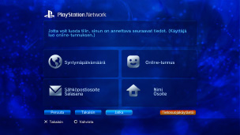

PlayStation™Network > Rekisteröityminen
Rekisteröityminen
Tämän toiminnon käyttäminen saattaa edellyttää, että käyttöjärjestelmä päivitetään.
PSNSM on online-palvelu, jossa voi tehdä Internet-ostoksia  (PlayStation®Store) -kaupassa, liittyä chatteihin
(PlayStation®Store) -kaupassa, liittyä chatteihin  (Ystävät) -kohdassa tai käyttää PSNSM-palvelun muita online-palveluita. PSNSM-palvelun käyttämistä varten tarvitaan Sony Entertainment Network -tili. Voit luoda tilin valitsemalla
(Ystävät) -kohdassa tai käyttää PSNSM-palvelun muita online-palveluita. PSNSM-palvelun käyttämistä varten tarvitaan Sony Entertainment Network -tili. Voit luoda tilin valitsemalla  (Luo tili) kohdasta
(Luo tili) kohdasta  (PlayStation™Network) ja noudattamalla sitten näyttöön tulevia ohjeita.
(PlayStation™Network) ja noudattamalla sitten näyttöön tulevia ohjeita.

Tilin luomisen tärkeimmät kohdat
| Henkilötiedot | Syötä rekisteröidyn käyttäjän tiedot, kuten syntymäpäivä, -kuukausi ja -vuosi sekä käyttäjän nimi ja osoite. |
|---|---|
| Päätili / Alatili | Tilejä on kahta eri tyyppiä: päätili ja alatili. Päätilin haltija voi määrittää tiliinsä liittyville alatileille tiettyjä käyttöehtoja. Päätili: Tavallisen tilin voi luoda riittävän vanha, rekisteröitynyt käyttäjä. Päätilin haltija voi määrittää tiliinsä liittyville alatileille tiettyjä käyttöehtoja. Alatili: Käyttäjät, joilla ei ole edellytyksiä oman alueensa päätiliin, voivat käyttää vain alatilejä. Alatili -tilien haltijat eivät voi luoda lompakkoja, mutta he voivat maksaa tuotteita ja palveluita omaan tiliinsä liittyvän Päätili -tilin lompakosta. Alatiliä ei voi luoda, jos siihen liittyvää päätiliä ei ole. Edellytykset päätilien ja alatilien saamiselle vaihtelevat maittain ja alueittain. Lisätietoja saat alueesi SIE-verkkosivustolta. |
| Sisäänkirjautumistunnus (Sähköpostiosoite) | Ota käyttöön tunnus, jota käytetään PSNSMiin kirjautumiseen. Käytä voimassa olevaa sähköpostiosoitetta, johon voidaan lähettää vahvistusviestejä esimerkiksi (PlayStation®Store) -kaupasta tehtävien ostosten yhteydessä. |
| Salasana |
Kirjoita salasana, joka täyttää seuraavat vaatimukset:
|
| Online-tunnus |
Ota käyttöön nimi, joka näytetään kaikille PSNSMissa. Online-tunnusta ei voi muuttaa, kun se on kerran luotu. Luo online-tunnuksesi seuraavien sääntöjen mukaan:
|
Vihjeitä
- Voit luoda alatilin seuraavalla verkkosivustolla:
https://www.playstation.com/acct/family - Sub Account -tilin luomisessa saatetaan tarvita tietokonetta alaikäisen henkilön iän mukaan. Master Account -tilin käyttäjätunnukseen liittyvään sähköpostiosoitteeseen lähetetään sähköpostiviesti luontiprosessin aikana. Viimeistele rekisteröityminen tietokoneessa seuraamalla sähköpostiviestin ohjeita.
- Kirjautuminen PSNSM-verkkoon luodulla alikäyttäjätunnuksella edellyttää, että käyttäjätunnus yhdistetään käyttäjään, joka kirjautuu PS3™-järjestelmään. Lisätietoja on tämän oppaan (PlayStation™Network) -kohdan [Olemassa olevan tilin käyttäminen] -vaihtoehdossa.
- Kirjautumistunnuksesi (sähköpostiosoite) ja salasanasi eivät ole julkisesti esillä. Älä paljasta näitä tietoja muille henkilöille.
- PS3™-järjestelmään voi luoda vain yhden käyttäjätunnuksen kutakin käyttäjää kohden. Voit luoda lisätilejä siirtymällä
 (Käyttäjät) -kohtaan ja luomalla lisää käyttäjiä.
(Käyttäjät) -kohtaan ja luomalla lisää käyttäjiä. - Lisätietoja käyttäjiin liittyvien henkilökohtaisten tietojen käsittelemisestä on oman alueen SIE-sivustossa.
- PSNSMin käyttämiseen tarvitaan Internet-laajakaistayhteys. Puhelinmodeemiyhteyttä ei tueta.
- PSNSM on saatavilla vain tietyillä alueilla ja tietyillä kielillä. Lisätietoja saat alueesi teknisestä tuesta.
- (Luo tili) näytetään vain, jos tiliä ei ole luotu.